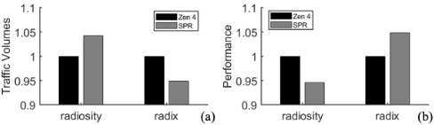
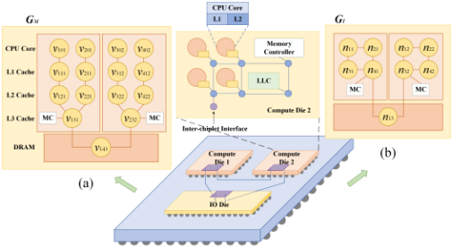
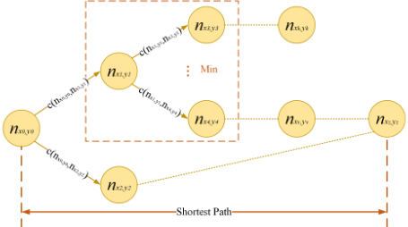
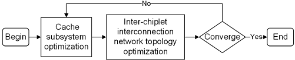
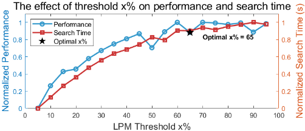
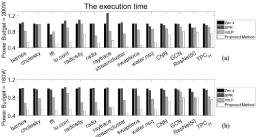

多Chiplet系统中Cache系统的设计空间探索
该论文针对多Chiplet众核系统中Cache层次设计空间庞大、现有DSE方法（IntLP、NN-Baton、Monad）无法充分优化Cache子系统性能的问题，提出一种新的设计空间探索方法。方法将Cache缺失率与片间/片内互连时延建模为Cache层次与互连网络参数的解析函数，基于C-AMAT构建性能模型，并在成本与功耗约束下定义最小化C-AMAT的优化问题；采用双层（bilevel）优化算法将问题分解为Cache子系统优化（分支定界+LPM匹配比剪枝）与Chiplet间互连拓扑优化（预定义拓扑与flit size穷举）两个子问题迭代求解。基于sniper+McPAT、以PARSEC/SPLASH2及神经网络与数据库应用为负载的实验显示，所提方法相对类AMD Zen 4与Intel Sapphire Rapids架构平均降低应用执行时间39.7%与39.2%，相对IntLP降低25.91%。其C-AMAT解析建模、D2D时延建模与PPA约束下的DSE框架，对团队Chiplet级互连与存储IP的架构定义和性能建模有直接参考价值。
多Chiplet众核系统中，片间通信时延比片内高约一个数量级，Cache与存储子系统的配置直接决定片间流量规模与系统性能；而Cache层次设计空间涉及Chiplet数量、每Chiplet核数、存储层次、各级Cache参数（容量、行大小、相联度、替换策略）与片间互连拓扑等大量变量。现有DSE方法（IntLP、NN-Baton、Monad）无法优化Cache子系统性能或充分探索该空间。论文要解决的问题是：在成本与功耗约束下，联合优化Cache层次与片间互连网络参数以最小化C-AMAT。
将多Chiplet系统建模为存储层次图G_M与片间互连拓扑图G_I两个图模型；基于多项式回归建模各级Cache缺失率，基于Bellman方程最短路径建模零负载时延（含包头时延与序列化时延）、基于G/G/1排队模型与Allen-Cunneen近似公式建模路由器排队时延，并回归建模存储并发度（平均命中并发度C_H与纯miss周期占比κ），从而构建C-AMAT递归性能模型；同时建立基于die面积/渐近良率与DRAM带宽的成本模型及组件累加功耗模型。在成本阈值C_T与功耗阈值P_T约束下定义最小化C-AMAT的优化问题，提出双层优化算法迭代求解：P1用分支定界算法并利用LPM匹配比（阈值x=65%）剪枝优化Cache子系统参数（Cache级数、每Chiplet核数、各级Cache参数）；P2在预定义拓扑（Mesh、Ring、Torus、Crossbar、Clos、Fat tree）与flit size（32~1024）集合上穷举优化片间互连拓扑与flit size。
在第一组功耗预算（正文表述为100W，图注为200W）下，应用执行时间相对类Zen 4、SPR与IntLP平均分别降低39.7%、39.2%与25.91%
在较低功耗预算（160W）下，相对Zen 4、SPR与IntLP执行时间分别降低40.61%、39.49%与18.01%
LPM剪枝阈值实验表明x=65%在平均应用性能与算法搜索时间之间取得较好平衡，被用于全部实验
案例分析：radiosity与radix负载下，SPR的片间流量分别为Zen 4的1.042x与0.949x，对应性能分别为Zen 4的0.946x与1.048x，验证片间流量越高性能越低
实验平台为sniper模拟器+McPAT功耗模拟，路由器面积/功耗模型来自DSENT、SRAM来自CACTI、核来自McPAT；相邻Chiplet间传输能耗取1.17 PJ/bit
区别于IntLP（整数线性规划做功能划分与Chiplet选择，且按论文分析只能优化L1/L2的size与associativity）以及NN-Baton、Monad等聚焦功能划分与资源分配的工作，本文将Cache层次（级数、每Chiplet核数、各级Cache参数）与片间互连（拓扑、flit size）联合纳入基于C-AMAT的解析性能模型，在成本/功耗约束下用双层迭代算法求解，可覆盖更大的联合设计空间；并利用LPM匹配比在分支定界搜索中剪枝以控制搜索开销。
相关度级别：high
命中能力域：2.1 IP 架构与微架构
理由：直接命中2.1域中明确列出的'chiplet/多die集成架构'与'workload-driven性能建模'：论文面向多Chiplet众核系统做Cache层次与D2D互连网络的PPA驱动架构权衡，其核心关注点（片间流量局部化、D2D打包/收发/interposer线时延与能耗、互连拓扑与flit size选择、成本/功耗约束下的配置优化）与团队UCIe、HBM4等多die/高速互连及存储IP的架构定义场景高度吻合；其C-AMAT递归性能模型、排队时延模型与约束DSE框架可迁移为团队架构阶段的性能建模与配置空间探索方法。论文属于系统级架构探索，不涉及RTL实现、验证方法学、形式验证或仿真加速平台，故不命中2.2~2.7。
建议动作：深入精读并做内部分享
摘要——尽管基于多芯粒的众核系统已成为后摩尔定律时代实现异构集成并应对制造与技术挑战的可行方案，但其设计与优化仍然高度复杂且充满挑战。在各类子系统中，缓存层次结构对整体系统性能具有重大影响，然而其庞大的设计空间带来了严峻的优化挑战。这种复杂性源于多种因素，例如系统中芯粒数量庞大、每个芯粒的核数、存储层次结构的差异、缓存容量的可变性、缓存策略以及芯粒间互连网络。现有的设计空间探索方法（如 NN-Baton 和 IntLP）既无法优化缓存子系统性能，也无法充分探索设计空间。为解决这些局限，我们提出了一种面向缓存子系统优化的新型设计空间探索方法。我们的方法将缓存缺失率和网络延迟建模为缓存层次结构以及芯粒间/芯粒内互连网络参数的函数。随后，我们定义了一个优化问题，即在成本和功耗约束下最小化并发平均访存时间（C-AMAT）。该问题采用双层优化算法求解，该算法迭代地求解两个相互独立的子问题：（1）缓存子系统优化；（2）芯粒间互连网络优化。实验结果表明，与类似 AMD Zen 4 和 Intel Sapphire Rapids 的架构相比，我们的方法分别使应用程序执行时间平均降低 39.7% 和 39.2%；与 IntLP 相比降低 25.91%。这些结果凸显了所提方法在未来基于多芯粒的众核系统中优化缓存子系统的潜力。
索引词——众核系统、多芯粒系统、设计空间探索。
Multi-chiplet based many-core systems have been a new design paradigm to overcome the area wall to provide high computation power for various applications. In multi-chiplet systems, multiple chiplets or dielets can be integrated on interposers or substrates, and chiplets communicate by dieto-die (D2D) interfaces. A key to multi-chiplet based manycore systems is the cache hierarchy design. The difference in the cache hierarchy between a multi-chiplet based manycore system and conventional single chip (SoC) many-core systems are two folds: (1) The chiplets are 'clusters' where the inter-chiplet communication is much more inefficient than that of the intra-chiplet communication. For example, the transmission latency between two adjacent chiplets is an order of magnitude longer than those of two adjacent tiles inside one chiplet. Due to the much higher latency and much lower bandwidth in inter-chiplet communication, the cache access traffic should be localized as much as possible to avoid high inter-chiplet communication latency [1]. (2) The problem of designing an optimal cache hierarchy has numerous parameters and extremely high complexity, especially in a multichiplet system.
Fig. 1 shows inter-chiplet traffic volumes for radiosity and radix applications on AMD Zen 4 [2] and Intel Sapphire Rapids (SPR) [3] systems. Zen 4 and SPR have different cache settings, e.g., whether the LLC in each chiplet is shared or The normalized inter-chiplet traffic volumes and performance of Zen 4 and SPR

not, and whether there is a centralized IO die for the memory controller or not. According to Fig. 1, for radiosity and radix, the inter-chiplet traffic volume of SPR is 1.042x and 0.949x of Zen 4 respectively, and correspondingly the performance of SPR is 0.946x and 1.048x of Zen 4 respectively. From this example, two observations can be made: (1) Higher interchiplet traffic volume leads to lower performance. (2) The configuration of cache and memory subsystem impacts the inter-chiplet traffic volume and thus performance. Therefore, it needs to explore the cache subsystem design space.
However, the design space of cache hierarchy is extremely huge, leading to an optimization problem with high complexity. For example, the design variables include chiplet number, the number of cores in each chiplet, memory hierarchy in each chiplet, cache size, different inter-chiplet interconnection networks, etc. Existing design space exploration methods like IntLP [4], NN-Baton [5], and Monad [6] cannot solve the above challenge since they cannot explore such a huge space.
因此，本文提出一种面向多芯粒系统缓存子系统设计空间探索的高效优化算法。实质上：（1）提出了一种基于 C-AMAT [7] 的面向多芯粒系统的解析式缓存性能模型；（2）构建了一个优化问题，用于在成本和功耗预算下选择参数以优化缓存性能；（3）提出了一种高效求解该问题的双层算法，其中优化问题被分解为两个子问题：（a）缓存子系统优化，以及（b）芯粒间互连网络优化，并对这两个子问题进行迭代优化。
本文其余部分的组织结构如下：第 2 节回顾相关工作；第 3 节对多芯粒系统进行分析与建模，并定义缓存性能优化问题；第 4 节提出一种用于求解该优化问题的双层优化算法；第 5 节给出实验结果；最后，第 6 节总结全文。
并发平均访存时间（C-AMAT）[7] 对传统的平均访存时间（AMAT）模型进行了细化，其通过考虑存储器并发性并对存储器周期进行分类，以更好地建模存储器访问性能。分层性能匹配（LPM）支持层次化的存储器性能分析，将整体优化转化为针对每一级缓存的一组局部优化。在文献 [8] 中，研究人员开发了相关模型，以改进多核系统的缓存缺失率估计与缓存划分，并针对数据共享、一致性和运行时监控进行处理，从而实现高效的缓存使用。文献 [5]、[6]、[9] 提出了包括 NN-Baton、SASMM 和 Monad 在内的多种方法，用于优化基于芯粒的系统设计，重点关注功能划分、资源分配和性能优化。IntLP [4] 提出了一种面向多芯粒系统设计的整数线性规划模型，用于确定功能组件的最优划分与芯粒选择。现有方法难以优化多个缓存参数，也难以探索足够大的设计空间，且大多数方法仅关注狭窄的目标。本文提出了一种综合优化方法，以克服这些挑战。
| Symbol | Definition |
|---|---|
| v ijk | The i -th cache in level j in chiplet k . |
| e ijk,mno | The link connecting v ijk and v mno . |
| w ( v ijk ) | The weights of node v ijk . |
| n p,q | The p -th node in chiplet q . |
| c ( n p,q ,n r,s ) | The link between adjacent nodes n p,q and n r,s . |
| ω ( c ( n p,q ,n r,s )) | The transmission latency between n p,q and n r,s . |
| R i | |
| n α | The chiplet number. |
| h i | The total number of memory hierarchy in chiplet i . |
| m i j | The cache size for level j in chiplet i . |
| Symbol | Definition |
As shown in Fig. 2, the multi-chiplet based many-core system is modeled by two graphs: memory hierarchy graph and inter-chiplet interconnection network topology graph, characterizing its cache and interconnection subsystems.
Definition 1. Memory hierarchy graph G M ( V, E ) . G M ( V, E ) is an undirected graph, where each node v ijk ∈ V is either a core, a cache unit, or a DRAM unit. v ijk is the i -th cache in level j in chiplet k . The edge e ijk,mno ∈ E indicates the link connecting v ijk and v mno (between two levels of cache units, or the reachability of core). If v ijk is connected to v mno , then e ijk,mno = 1 , indicating v ijk is related by v mno (for example, inclusiveness), and 0 otherwise. As shown in Fig. 2 (a), each core with an L1 cache, an L2 cache, and the two cores sharing an L3 cache are shown as the memory hierarchy graph. There is an edge between v 131 and v 121 , indicating the inclusiveness of v 131 over v 121 . Otherwise, there is no connected edge between v 131 and v 321 , indicating that v 131 is not inclusive over v 321 .
Define h k as the total number of cache hierarchy in chiplet k . The weights w ( v ijk ) of node v ijk ∈ V are as follows. The node v ijk with j = 0 is a core, where cpi ( v ijk ) is the ideal CPI (assuming no cache miss), which is the average number of clock cycles per instruction. The node v ijk with 0 < j < h k is a cache unit, where cs ( v ijk ) is cache size, cl ( v ijk ) is cache line size, as ( v ijk ) is associativity, rs ( v ijk ) is replacement strategy, and ac ( v ijk ) is the cache access rate.

The node v ijk with j = h k is a DRAM unit, where bw ( v ijk ) is DRAM bandwidth.
Definition 2. Inter-chiplet interconnection network topology graph G I ( N,C ) . G I ( N,C ) is also defined as an undirected graph where each node n p,q ∈ N is a node in chiplet q on the inter-chiplet network, which is composed of a core, an L1/L2 bank, a network interface, and a router, or is a D2D interface only. C is the set of network links, c ( n p,q , n r,s ) ∈ C is the link between adjacent nodes n p,q and n r,s . The chiplets in G I are denoted as R 1 , . . . , R n α , where each R i ⊂ N , i = 1 , . . . , n α . n α is the total number of chiplets. The number of cores in chiplet i is denoted by | R i | .
Define ω ( c ( n p,q , n r,s )) as the transmission latency between n p,q and n r,s . If q = s , nodes n p,q and n r,s are in the same chiplet; otherwise, they are in different chiplets. Fig. 2 (b) shows an example of a three-chiplet system connected by an inter-chiplet network and its corresponding interconnection graph.
本文使用 G M 对缺失率进行建模，其中的参数与不同缓存层级的缓存缺失率相关。给定 G M ，节点 v ijk ( 0 < j ≤ h k - 1 ) 的缺失率为 M ( v ijk ) 。将 Π( v ijk ) = { π 1 ( v ijk ) , . . . , π n ( v ijk ) } 定义为从任意核心到 v ijk 的整条可达路径上的节点集合（不包括核心），其中 π x ( v ijk ) 为可达路径上的第 x 个节点，n 为节点总数。缓存层次结构中所有与 v ijk 存在连接关系的上层节点均包含在 Π( v ijk ) 中。
根据 [10]，v ijk 的缓存缺失率 M ( v ijk ) 被建模为：
其中 Λ( v ijk ) 是关于缓存容量、缓存行大小和相联度的多项式函数。a x 、b x 、c x 和 d x 为缺失率模型的缓存相关系数，α x 、β x 、γ x 和 δ x 为多项式阶数，S ( Λ( v ijk ) , rs ( π x ( v ijk ) )) 是一个映射函数，在给定 Λ( v ijk ) 和替换策略的情况下返回缺失率。
延迟模型用于估计两个内核之间的传输延迟，该延迟由两部分组成：(1) 零负载延迟，与源内核和目标内核之间的距离有关；(2) 排队延迟，由排队论模型建模。
1) 零负载延迟：通过使用 G I 对延迟进行建模，L ( n p,q , n r,s ) 被定义为节点 n p,q 访问节点 n r,s 的零负载延迟。该延迟由两部分组成：报头包延迟 L h ( n p,q , n r,s ) 和串行化延迟 L s ( n p,q , n r,s )，如下所示。
其中，报头包延迟 L h ( n p,q , n r,s ) 由节点 n p,q 与节点 n r,s 之间的最短路径 l ( n p,q , n r,s ) 以及该路径上的延迟决定。串行化延迟 L s ( n p,q , n r,s ) 与数据包大小（flit 大小）有关。L s ( n p,q , n r,s ) 和 L h ( n p,q , n r,s ) 的公式如下。
其中，µ 为传输速率，s i 为数据包大小，f 为 flit 大小，η 为路由器流水线级数。

如图 3 所示，最短路径的传输延迟利用 Bellman 方程 [11] 递归推导得到，其中从节点 n x 0 ,y 0 = n p,q 到节点 n x k ,y k = n r,s 的最短路径被称为节点序列 Γ( n p,q , n r,s ) = Γ( n x 0 ,y 0 , n x k ,y k ) = { n x 0 ,y 0 = n p,q , n x 1 ,y 1 , . . . , n x z ,y z , . . . , n x k ,y k = n r,s } 。通过比较节点之间的所有可能路径，确保在递归的每一步都选出最短距离，如下所示。
其中，l ( z ) ( n x 0 ,y 0 , n x z ,y z ) 是递归第 z 步中从 n x 0 ,y 0 到 n x z ,y z 的最短距离。l ( z ) ( n x 0 ,y 0 , n x z ,y z ) 被递归更新，直至达到最优状态。
因此，l ( n p,q , n r,s ) 的计算遵循如下 Bellman 方程。
其中，l ( n x z ,y z , n x z ,y z ) = 0 ，且 ω ( c ( n x z - 1 ,y z - 1 , n x z ,y z ) ) 是相邻节点 n x z - 1 ,y z - 1 与 n x z ,y z 之间的传输延迟。
2) 排队延迟：两个节点 n p,q 和 n r,s 的排队延迟是路径 Γ( n p,q , n r,s ) 中每个路由器 n x z ,y z 的排队延迟之和，该路径由路由算法获得。在 G/G/1 模型（具有一般到达分布和服务分布的单服务器队列）中，对经过 n x z ,y z 的流 f a c ,b c = { f a 1 ,b 1 , . . . , f a g ,b g } 进行分析。路由器 n x z ,y z 由多个输入通道 IC n xz,yz i = { IC n xz,yz 1 , . . . , IC n xz,yz q } 组成，这些输入通道竞争单个输出通道 OC n xz,yz j 。路由器 n x z ,y z 对从 IC n xz,yz i 到 OC n xz,yz j 的数据包的平均排队延迟 T i → j ( n x z ,y z ) 如下 [12]。
其中，ρ j ( n x z ,y z ) 表示在路由器 n x z ,y z 中，OC n xz,yz j 被 IC n xz,yz i 的数据包占用的时间比例，λ j ( n x z ,y z ) 为流向 OC n xz,yz j 的平均数据包速率，λ i → j ( n x z ,y z ) 为从 IC x z ,y z i 到 OC x z ,y z j 的平均数据包速率，µ j ( n x z ,y z ) 为 OC n xz,yz j 的平均服务速率。C 2 A ( n x z ,y z ) 和 C 2 S j ( n x z ,y z ) 是基于 Allen-Cunneen 近似公式 [12] 得到的相应数据包到达速率与服务速率之间的相关系数。
总排队延迟 W ( n p,q , n r,s ) 是从节点 n p,q 到节点 n r,s 的路径上，针对 OC n xz,yz j 的各路由器 n x z ,y z ∈ Γ( n p,q , n r,s ) 的排队延迟之和，由下式计算。
综上所述，D ( n p,q , n r,s ) 是零负载延迟 L ( n p,q , n r,s ) 与排队延迟 W ( n p,q , n r,s ) 之和，表示如下。
根据 [7]，从以存储器为中心的视角定义平均命中并发度 C H ( v i
给定上述多芯粒系统的存储层次图 G M 与芯粒间互连网络拓扑图 G I，结合缺失率模型、延迟模型和存储器并发模型，性能模型的计算如下。
采用延迟模型计算芯粒间与芯粒内互连系统中两个节点之间的点对点延迟，相邻缓存层级 j 与 j - 1 之间的平均延迟如下。
其中 f a c ,b c 为从 v i ( j - 1) k 流向 v ijk 及其反向的流，c = 1 , . . . , g 。
将 C ( v i ( j - 1) k ) 定义为一个 CPU 周期内缓存层 j - 1 的平均并发访存时间。C ( v i ( j - 1) k ) 与下一级缓存的平均并发访存时间 C ( v ijk ) 密切相关，其递归关系如下 [7]。
C-AMAT σ ( G M , G I ) 如下 [7]。
其中 H ( v ijk ) 为芯粒 k 第 j 层缓存的命中时间，C H ( v ijk ) 为芯粒 k 第 j 层缓存的平均命中并发度，M ( v ijk ) 为芯粒 k 第 j 层缓存的缺失率，κ ( v ijk ) 为纯缺失周期数与缺失周期数之比，D ( j - 1 , j ) 为相邻的第 ( j - 1) 层与第 j 层缓存之间的平均延迟，n α 为芯粒数量，h k 为芯粒 k 中存储层次的总数，| R k | 为芯粒 k 中的核心数量，t 为乘积中直至 j 的递归层数。
架构成本是各组件（裸片与 DRAM）成本与芯粒集成成本 c int 的累加。裸片成本 C die ( v ijk ) 如下式所示。
其中，A die i 为裸片面积，c 1 为单位硅面积成本，Y die 为渐近良率，由裸片面积 A die i 、缺陷密度 D 和聚集因子 a 决定。
DRAM 的成本 C dram ( v ijk ) 表示为：
其中，bw ( v ijk ) 为 DRAM 带宽，c 2 为 DRAM 的货币成本，U bw 为每个单元提供的带宽。
多芯粒系统的成本建模如下。
系统功耗是各组件功耗的累加。多芯粒系统的功耗建模如下。
其中，P core ( v ijk ) 为核心功耗，P dram ( v ijk ) 为 DRAM 功耗，P router ( v ijk ) 为路由器功耗，r k 为每个芯粒或中介层上的路由器数量。
基于上述性能、功耗和成本模型，在成本和功耗的约束下，定义优化问题以实现多芯粒系统的最佳性能，即最小化 C-AMAT σ ( G M , G I )，其中决策变量为 G M 和 G I 。每个芯粒的成本和功耗均不应超过各自的阈值 C T 和 P T 。该优化问题可定义如下。
上述定义的问题具有巨大的搜索空间。为了高效地求解该问题，下一节提出了一种双层优化算法。
双层优化算法的工作流程如下。式 (2)-(21) 中定义的问题被分解为两个子问题：(1) 缓存子系统优化子问题 (P1)，以及 (2) 芯粒间互连网络拓扑优化子问题 (P2)。

双层优化的工作流程如图 4 所示，该流程以迭代方式执行。在每次迭代中，仅求解一个子问题，而另一个子问题的变量则作为约束被固定。
优化过程在 P1 与 P2 之间交替进行，直至目标性能指标 σ 收敛或达到预定义的最大迭代次数 n max 为止。收敛准则由下式给出：
其中，σ i 为应用在第 i 次迭代中的 C-AMAT，δ 为收敛条件，n max 为迭代次数上限。
1) 搜索空间定义：P1 的目标是选择 G M 个参数（缓存层级 h i 、芯粒 i 中的核数 | R i |，以及各级缓存的参数 w ( v ijk ) ），其定义如下：
该子问题可以通过分支定界算法求解。在该算法中，此子问题中的决策变量被构造为树节点 g a b ，即第 b 层上的第 a 个节点，其共有 n 个搜索量 ˆ x c a b 。由此构成一棵搜索树，其中树节点 g a b 的定义如下。
每个节点 g a b 都关联一个目标值 σ ( g a b ) ，其中 C ( g a b ) 和 P ( g a b ) 分别表示成本和功耗。
基于上述性能模型，我们使用 LPM 模型 [7] 来验证各缓存层的利用率。LPMR ( v ijk ) 定义为缓存层级 j 处的匹配率，如下所示。
其中，f mem 为核每条指令的平均存储器访问次数，µ ( v ijk ) 为缺失周期与存储器活跃周期之比，二者均可通过多项式回归模型获得。
实验在 sniper 模拟器上进行，并采用 McPAT 作为功耗模拟器。
| Configuration | Configuration |
|---|---|
| Core architecture | x86-64 |
| Main memory size | 2GB |
| Get/Decode/Submit Size | 4/4/4 |
| Baseline frequency | 3GHz |
| ROB size | 64 |
| L1 data cache (private) | 16 KB, 2-way, 32B line, 2 cy- cles, 2 ports |
| L1 instruction cache (private) | 32 KB, 2-way, 64B line, 2 cy- cles, 2 ports |
| Level 2 cache (shared) | 64KB slices /core, 64 line, 6 cycles, 2 ports |
| Flit size | 32, 64, 128, 256, 512, 1024 bits |
| Intra-chiplet communication latency | Router: 2 cycles; link: 1 cycle |
| Inter-chiplet communication latency | Router: 2 cycles |
| Buffer depth | 4 flits |
| Benchmarks | Benchmarks |
| barnes, cholesky, fft, lu.cont, radiosity, radix, raytrace, stream- cluster, swaptions, water.nsq, CNN, GCN, ResNet50, TPC H | barnes, cholesky, fft, lu.cont, radiosity, radix, raytrace, stream- cluster, swaptions, water.nsq, CNN, GCN, ResNet50, TPC H |
| Configuration | Configuration |
表 2 列出了多芯粒系统模拟器的配置。基准测试程序来自 PARSEC、SPLASH2、神经网络和数据库应用。路由器的面积与功耗模型来自 DSENT，SRAM 的面积与功耗模型来自 CACTI，处理器核心的面积与功耗模型来自 McPAT。相邻芯粒之间的传输能耗为 1.17 PJ/bit [5]，相邻芯粒之间的传输延迟由以下三部分组成：1) D2D 接口中的打包与解包开销，取自 [13]；2) 收发器传输延迟，取自 [14]；3) 中介层走线延迟与功耗，取自 [15]。
如图 5 所示，LPM 模型的 x % 阈值是通过实验确定的。图 5 表明，x = 65% 能够在平均应用性能与算法搜索时间之间取得良好的平衡，因此在实验中采用该值。
为了评估本文提出的算法，选择 IntLP [4] 进行对比。IntLP 使用整数线性规划模型来确定功能组件的最优划分以及芯粒的选择。此外，还在 sniper 中对 Zen 4 和 SPR 进行了模拟以供比较。

在后续实验中，对本文提出的方法、Zen 4、SPR 和 IntLP [4] 的性能进行了比较。图 6 (a) 和 (b) 分别展示了功耗预算为 100W 和 160W 时的执行时间比较。从图 6 (a) 可以看出，本文提出的方法的执行时间相比 Zen 4、SPR 和 IntLP 分别降低了 39.7%、39.2% 和 25.91%。从图 6 (b) 可以看出，在低功耗预算下，本文提出的方法的执行时间相比 Zen 4、SPR 和 IntLP 分别降低了 40.61%、39.49% 和 18.01%。四种方法的执行时间均以 Zen 4 的执行时间为基准进行归一化。其原因在于，本文提出的方法能够有效探索多芯粒系统中缓存子系统的设计空间，而 Zen 4 和 SPR 是固定设计，IntLP 只能对 L1 和 L2 缓存的容量与相联度进行优化，无法充分探索设计空间。

本文研究了基于多芯粒的众核系统中缓存层次结构的优化问题。采用图模型对缓存及芯粒间互连参数相关的性能进行建模。构建了一个优化问题，以在成本和功耗约束下最小化应用程序的缓存访问时间。提出了一种双层优化算法，通过迭代求解两个子问题来高效求解上述问题：（1）缓存子系统优化；（2）芯粒间互连优化。实验结果证实了所提方法相对于现有方法的优越性。因此，该方法适用于未来大规模多芯粒系统的缓存层次结构优化。
参考文献